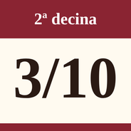
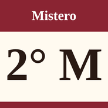

IL SANTO
ROSARIO
Aprenda a rezar o terço em italiano — ou reze em português — passo a passo, no celular.
GrátisSem internetModo carro
Deslize para conhecer →
Três formas de rezar
Escolha a bandeira
Tudo em italianoPara quem quer mergulhar no idioma
Italiano + explicaçãoOrações em italiano, ajuda em português
Tudo em portuguêsO terço completo, do jeito do Brasil
Nunca mais perca a conta
Cada Ave-Maria contada
O app mostra a oração certa na hora certa, conta as dez Ave-Marias e já começa pelo mistério do dia.
🚗 Modo carro
Reze no trânsito sem perder a conta
Para quem já sabe rezar: o painel do carro mostra só o que importa — a contagem e o mistério.
ReproduzindoCarPlay

Ave Maria 3/10
2° La flagellazione di Gesù
⏮⏸⏭
⏭O botão “próxima faixa” do volante passa para a próxima Ave-Maria. ⏮ volta.
🚗 Modo carro · como usar
O mistério na tela, as mãos no volante

2° mistero del Dolore
La flagellazione di Gesù
- Abra o terço no celular e toque no 🚗 .
- No carro, use ⏮ ⏭ do volante para avançar ou voltar as orações.
- Quer companhia? Aperte ▶ e o app reza em voz alta com você.
- No fim aparece “Dio ti benedica” e quanto tempo durou o terço.
Testado no Apple CarPlay. Combine o terço com atenção total ao trânsito.
Aprenda a pronúncia
Ouça, no seu ritmo
Toque em ▶ Ouvir: o celular lê a oração. Velocidade de 0,6× a 1,5×, repetição, letra maior ou menor e modo escuro para rezar à noite.
Tudo à mão
Mais que um terço
📖Orações em italiano e português
✨Mistérios simplificados
▶️Terço em vídeo
⛪Igrejas perto de você
Instale no iPhone
O ícone na tela inicial
- Safari
- •••
- Compartilhar
- Adicionar à Tela de Início
- Adicionar
Em iPhones mais antigos o Compartilhar já fica na barra de baixo, sem o •••.
Instale no Android
O ícone na tela inicial
- Chrome
- ⋮
- Adicionar à tela inicial
- Adicionar
Em alguns celulares a opção se chama “Instalar app”.
Antes de rezar
Três dicas rápidas
- Abra o app uma vez com internet. Depois o terço, as orações e o modo carro funcionam sem conexão.
- Se o link abriu dentro do WhatsApp ou do Instagram, toque em “Abrir no navegador” antes de instalar.
- Versões novas chegam sozinhas: basta abrir o app com internet.
Preghiamo!
Pregate tutti i giorni il Santo Rosario.
Abbiate fiducia, non temete.
Abrir o app
Feito por Marcelo Ratto para aprender a rezar o terço em italiano.
Distribuição gratuita.